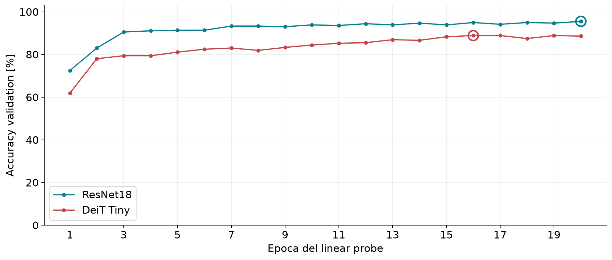
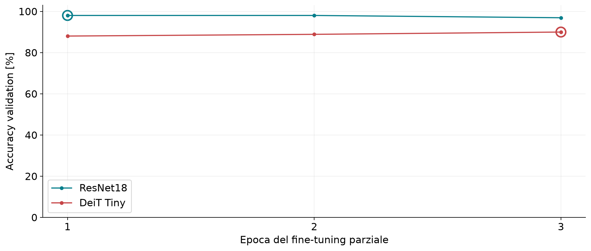
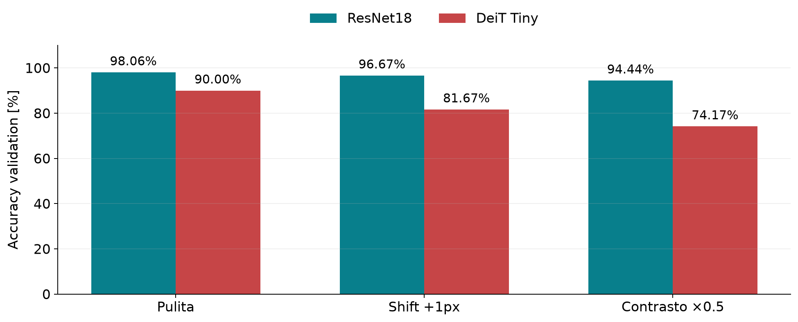
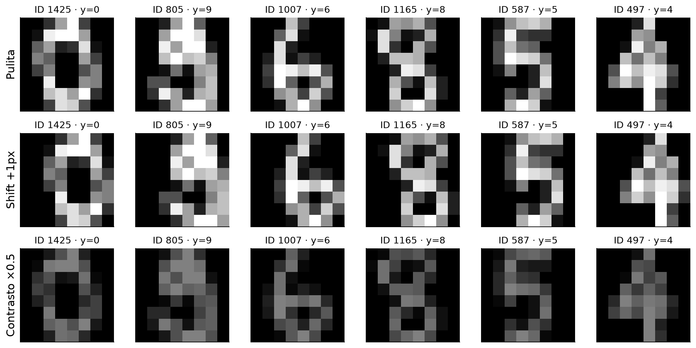

Computer Vision · corsa di riferimento realmente eseguita. I numeri di training sono importati, non una nuova esecuzione sul computer di chi legge. Nessun test valutato.
| Modello | Stadio | Epoca | Corretti/N | Accuracy | CE |
|---|---|---|---|---|---|
| resnet18 | lp | 20 | 344/360 | 95.56% | 0.281239 |
| resnet18 | ft | 1 | 353/360 | 98.06% | 0.098000 |
| deit_tiny | lp | 16 | 320/360 | 88.89% | 0.468520 |
| deit_tiny | ft | 3 | 324/360 | 90.00% | 0.281167 |
La validation ha selezionato i checkpoint. Le misure descrivono questo protocollo e non costituiscono una valutazione finale indipendente.




| Modello | LP totale [s] | FT incrementale [s] | Pipeline [s] | Latenza batch1 mediana [ms] |
|---|---|---|---|---|
| resnet18 | 61.278 | 384.694 | 445.972 | 17.582 |
| deit_tiny | 13.163 | 92.637 | 105.800 | 9.800 |
LP comprende estrazione delle feature training/validation e fit della testa. FT comprende training e valutazioni a fine epoca. Latenza: preprocessing+forward CPU, batch 1, 3 warm-up, 7 ripetizioni. Esclusi disco e caricamento pesi. La memoria di picco non è misurata.
Ambiente: python=3.12.14, torch=2.14.0, torchvision=0.29.0, timm=1.0.30, numpy=2.3.5, platform=macOS-26.6.2-arm64-arm-64bit, processor=arm64, device=cpu, threads=1, workers=0, dtype=float32
Dataset SHA256: 972401a5680cf0a1c5ef60295fb915f4efbd51d7a39b35c0cfa39d73cc33ca1e
Dettagli completi in JSON, tabella in CSV. Per ricaricare i checkpoint aprire Ripristino_risultati.ipynb.